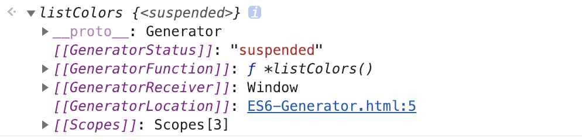
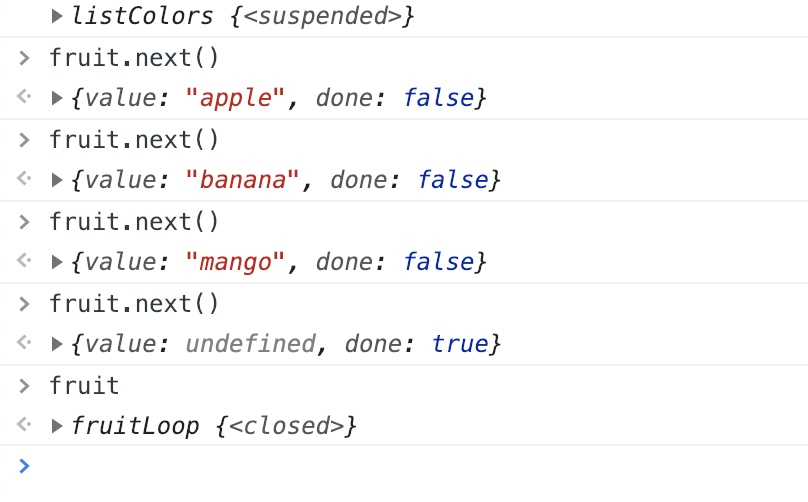

生成器方法使用*符号标识
在方法内使用yield关键字标识每次返回的值 返回yield后的值
yield后的值为执行next()方法的返回值
next方法的参数即为上个yeild的赋值
//使用*方法标识生成器函数
function *listColors() {
yield "red";
yield "green";
yield "blue";
}
const colors = listColors()
console.log(colors)

特性
yield可以使用计算值
yield使用计算值
function *listColors() {
let i = 0;
yield i
i++
yield i
i++
yield i
i++
yield i
}
const colors = listColors()
console.log(colors)

当遍历结束时,colors遍历器方法状态status 从
suspended变为closed
遍历数组
const dataArray = ["apple", "banana", "mango"]
function *fruitLoop() {
for (const value of dataArray) {
yield value
}
}
const fruit = fruitLoop()

不调用next方法 不会执行函数内容,调用next()方法只会执行到yield语句结束
function *fruitLoop() {
console.log(dataArray)
for (const value of dataArray) {
yield value
console.log("这是"+value)
}
}
const fruit = fruitLoop() //此时并不会log array的信息
fruit.next() //此时才会执行log array而不会logvalue值
fruit.next(） //此时才会logvalue值
next方法的参数 即为yield的返回值
yield后的值为执行next()方法的返回值
next方法的参数为yeild的语句的赋值
let userName
function* loopFunc() {
//并不会把"fk"+"wtt" 返回给userName
//把下一个next方法的参数赋值给 username
userName = yield "fk"+"wtt"
console.log("执行结束")
}
const loopTest = loopFunc()
//result 为{value: "fkwtt", done: false}
const result = loopTest.next() //此时userName 仍为undefined
//{value: undefined, done: true}
const result2 = loopTest.next("lyy")//此时userName为"lyy"
//执行结束
只有一个yield 但是需要两个next才能使函数执行结束